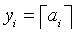

Intel® oneAPI Math Kernel Library Developer Reference - Fortran
Computes an integer value rounded towards plus infinity for each vector element.
call vsceil( n, a, y )
call vsceili(n, a, inca, y, incy)
call vmsceil( n, a, y, mode )
call vmsceili(n, a, inca, y, incy, mode)
call vdceil( n, a, y )
call vdceili(n, a, inca, y, incy)
call vmdceil( n, a, y, mode )
call vmdceili(n, a, inca, y, incy, mode)
Name |
Type |
Description |
|---|---|---|
n |
INTEGER, INTENT(IN) |
Specifies the number of elements to be calculated. |
a |
DOUBLE PRECISION for vdceil, vmdceil REAL, INTENT(IN) for vsceil, vmsceil DOUBLE PRECISION, INTENT(IN) for vdceil, vmdceil |
Array that specifies the input vector a. |
inca, incy |
INTEGER, INTENT(IN) |
Specifies increments for the elements of a and y. |
mode |
INTEGER(KIND=8), INTENT(IN) |
Overrides global VM mode setting for this function call. See vmlSetMode for possible values and their description. |
Name |
Type |
Description |
|---|---|---|
y |
DOUBLE PRECISION for vdceil, vmdceil REAL, INTENT(OUT) for vsceil, vmsceil DOUBLE PRECISION, INTENT(OUT) for vdceil, vmdceil |
Array that specifies the output vector y. |
The function computes an integer value rounded towards plus infinity for each vector element.

| Argument | Result | Exception |
|---|---|---|
| +0 | +0 | |
| -0 | -0 | |
| +∞ | +∞ | |
| -∞ | -∞ | |
| SNAN | QNAN | INVALID |
| QNAN | QNAN |